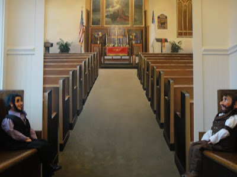
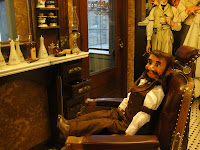

New Easter Greeters?
4/23/2011
{kind=link}

Unless you live in a certain part of Pennsylvania, you'll probably never guess where these photos were taken. Ventriloquist figures, "Snoozy" (left) and "Abe" (right) appear to be patiently waiting to greet the Easter church throngs who will enter for worship tomorrow morning. Abe even wen
{kind=link}

t so far as to make a trip to the barber in order to look his best. Both are wearing their new custom sewn clothes.These figures belong to Del Burkholder, and are used not only in churches, but also taken with him in his prison ministry. Del tells us the prison required security does present a unique challenge since everyone, including ventriloquist figures, must be searched both coming and going!
Now for the location of these photos. The pictures were both taken in the waiting room of a Cloister Car Wash! While the chair and pews are actual, the rest is 3-D painting by a full time artist whose specialty is the 1900-1920 era. The wash where these pictures were taken was featured a year ago on History Channel's Modern Marvels - Car Wash Tech (without Snoozy and Abe, but both have been featured on this blog is the past, so they have no complaints).